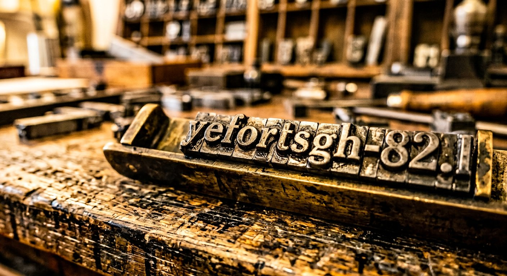

Mayence · vers 1450
Les caractères mobiles
Objet technique
Chaque lettre est coulée séparément dans un moule à matrices, puis assemblée pour former la page. Après le tirage, les caractères sont démontés et recomposés pour la page suivante. Le texte devient matériel vivant : une même page, reproduite cent fois, reste identique — ce que la copie manuscrite n'avait jamais permis.